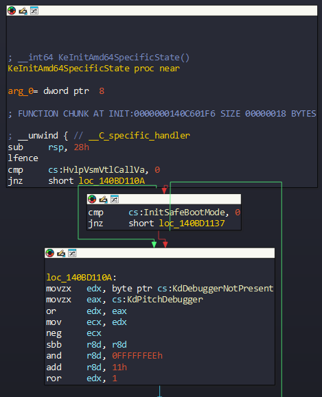

PatchGuard Analysis - Part 1 - Wed, Aug 6, 2025
This article is dedicated to B. who the dark shadow. Thx for your all help, the dark shadow B.
Introduction
Most of us have probably come across PatchGuard (Kernel Patch Protection) at some point. Developed by Microsoft, it plays a critical role in 64-bit Windows operating systems. Its mission is simple yet vital: preventing unauthorized modifications to kernel-level structures in order to preserve system integrity. Today, it still stands as one of the core components of modern Windows security architecture.
For me, PatchGuard has been a fascinating topic ever since I first got into reverse engineering on Windows systems. Despite its complexity, diving into its inner workings has not only satisfied my personal curiosity but also provided valuable insights from both a Red Team and malware development perspective.
In this article, we’ll walk through the process step by step — from PatchGuard’s initialization to the integrity checks it performs — taking a closer look behind the curtain of this critical protection mechanism.
Before starting, this analysis was prepared with the aim of extending and enriching previous PatchGuard analyses conducted on earlier Windows versions to Windows 11. My goal is to illustrate how the system’s kernel-level protection mechanism have evolved in the latest versions and how they are integrated into the modern security architecture.
By the way, you can click here if you want to view the references.
KiFilterFiberContext Function
The initialization and startup of PatchGuard are managed by KiFilterFiberContext. This function is not only responsible for these tasks but also controls certain flags related to initialization and other operations. For example, Kernel-Debugging. If someone attach the debugger in the system, KiFilterFiberContext will not start the PatchGuard. Also, the function calls some procedure which initialize arguments, as we will see later. The point is that this function really important for the PatchGuard.
KiFilterFiberContext is called twice in beginning of boot before loading any user-driver. Let’s see the methods:
Method 1: Calling from KeInitAmd64SpecificState
At beginning, KeInitAmd64SpecificState checking some flags:

We can see that the function checks InitSafeBootMode, KdDebuggerNotPresent and KdPitchDebugger flags. The flags, on the contrary, are used for division operations, not for directing exits. If debugging is enabled on the system, These flags will set to 0, but they will set to 1 in normal scenario.
these After that, the registers taken these values:
- **rax => 0x80000000
- rdx => 0x80000000
- r8d => 0xfffffff
In this context the debugging flags are used in the computation, as we can see. The main goal here is that the function calls KiFilterFiberContext with an intentional trigger error. This method is actually provides confidential process.
According AMD64 Documentation, If a positive result is greater than 7FFFFFFFH or a negative result is less than 80000000H, then the divide error is triggered. it will this computation:
After the computation, it will trigger the error and KiFilterFiberContext will be executed:

If you take a look in KeInitAmd64SpecificState, you will see that there is actually an exception handler:

So, in this case the function will be called.
Method 2: Calling from ExpLicenseWatchInitWorker
KiFilterFiberContext also can called from ExpLicenseWatchInitWorker function but it’s not called directly like previous method which we saw. ExpLicenseWatchInitWorker function called before KeInitAmd64SpecificState function and it decides whether to call KiFilterFiberContext with probability of 4%. This method is actually used by many mechanism of PatchGuard: They often takes random values with rdtsc instruction which as we will see later.
In beginning of the function, it takes address of PRCB (Process Register Control Block) and it processes the HalReserved Fields in PRCB (we will see later this section):

As we can see, it takes two values from HalReserved fields and clears the values.
After that it takes random value with rdtsc instruction. This instruction is used for Read-Time Stamp Counter:
“The TSD bit allows software to control the privilege level at which the time-stamp counter can be read. When TSD is cleared to 0, software running at any privilege level can read the time-stamp counter us ing the RDTSC or RDTSCP instructions” [1]
The random value multiplied by constant value 0x51eb851f:

And then it will call KiFilterFiberContext with probability of 4%:

You can see that KiFilterFiberContext called with one parameter which a structure in rcx. KiFilterFiberContext is called with a structure. This structure is named ‘KI_FILTER_PARAM’ in literature and the structure contain these:
typedef struct _KI_FILTER_FIBER_PARAM
{
CHAR code_prefetch_rcx_retn[4]; // prefetchw byte ptr [rcx]; retn;
CHAR padding[4]; // Align
PVOID pPsCreateSystemThread;
PVOID UcpRetrieveCurrentConfigSettings+0x174;
PVOID pKiBalanceSetManagerPeriodicDpc;
}KI_FILTER_FIBER_PARAM, *PKI_FILTER_FIBER_PARAM;
The HalReserved fields is prepared from KiLockServiceTable function. But when you look at codes of KiLockServiceTable you can’t see any codes for this operation. Again, it uses a exception handler to obfuscate, but instead of triggering a fault, it calls directly a function:

The handler itself is actually a stub to the function KiFatalExceptionFilter:

In these codes, it firstly gets address of PRCB and the structure. You can see that rbx register is takes address which named ‘KiServiceTablesLocked’ but this is a misleading operation. There is actually address of the structure KI FILTER FIBER PARAM .
Also we can verify if the address KiServiceTablesLocked is not misleading with WinDbg:

I placed a bp in the first part of ExpLicenseWatchInitWorker and got the address of the structure corresponding to the offset 0x78 of the structure. Now let’s check this address:
kd> dps fffff803`0c3e71f8 L1
fffff803`0c3e71f8 fffff803`7d566010 nt!KiServiceTablesLocked
As you can see, it holds KiServiceTablesLocked. Now let’s take a look at the content of this structure:

So we can verify that this structure is KI_FILTER_FIBER_PARAM. If we take a look at the other used HalReserved field, we can also verify that it holds the address of the KiFilterFiberContext:

Before contining on to the next header, I need to add an important note that calling KiFilterFiberContext with this structure is only performed by ExpLicenseWatchIntWorker. The KeInitAmd64SpecificState function calls it directly with NULL.
Decompiling KiFilterFiberContext
This function’s mainly job is to call initialization routine which named ‘KiInitializePatchGuardContext’ in literature and then the parameters will initialize. These parameters will determine which method to use to trigger a Patchguard check.
Firstly, it disables Debugger in beginning:

An important detail is that KiFilterFiberContext contain a small callback function, which isn’t found in ntoskrnl. The function takes a pointer which named ‘PatchGuardTVCallBack’ as a parameter:

This pointer which Argument1 of ExNotifyCallback is initialized in SecInitializeKernelIntegrityCheck function from mssecflt.sys.
KiFilterFiberContext calls the function called KiInitPatchGuardContext with three methods to initialize the PatchGuard Context; the first time occurs no matter what, the second time with only 50% chance, and third time with a new method which we will see later. Here’s a pseudocode for KiFilterFiberContext:
...
if (!g_GlobalCtxPointer && !KpgApiRegistered &&!pKiFilterFiberParam) {
if (PsIntegrityCheckEnabled) {
/* Initialize ObjectAttributes */
ObjectAttributes.Length = 48;
ObjectAttributes.ObjectName = (PUNICODE_STRING)L"TV";
ObjectAttributes.RootDirectory = 0;
ObjectAttributes.Attributes = 64;
&ObjectAttributes.SecurityDescriptor = 0;
Status = ExCreateCallback(&CallbackObject, &ObjectAttributes, 0, 0);
if (Status >= 0) {
ExNotifyCallback(CallbackObject, PatchGuardTVCallBack, &KpgApiConsumerRanges);
ObfDereferenceObject(CallbackObject);
}
}
...
/* Initialize First Context */
Result = KeExpandKernelStackAndCallout(KiInitPatchGuardContext, ParameterArray, 0xC000u)
if (Result) {
if (random5 < 6) {
...
/* Initialize second context */
Result = KeExpandKernelStackAndCallout(KiInitPatchGuardContext, ParameterArray, 0xC000u);
}
if (Result) {
if (!g_GlobalCtxPointer && !pKiFilterFiberParam && (KiSwInterruptPresent() >= 0) && KpgApiRegistered) {
...
Result = KeExpandKernelStackAndCallout(KiInitPatchGuardContext, ParameterArray, 0xC000u);
}
}
}
This function is called with KeExpandKernelStackAndCallout function. KeExpandKernelStackAndCallout function calls the function which given function as parameter 1 with guaranteed amount of stack space.[2]
One detail that I did not add in the pseudocode is that random values are generated before each KiInitPatchGuardContext is called. As we discussed in ExpLicenseWatchInitWorker, here again, random values are generated for the parameters via the rdtsc instruction. Generally, It uses rdtsc to get timestamp values, then performs bitwise operations like rotate-right, XOR, and modulo to generate seemingly random values.

It passes the Arguments from Parameter Array to KiInitPatchGuardContext and then it calls it.
We can also see these arguments dynamically when the function is called for the first time:

Parameters are prepared and KiInitPatchGuardContext is called. The values received are as follows:
- RCX => 1 (as Argument 1)
- RDX => 5 (as Argument 2)
- R8 => 2 (as Argument 3)
- R9 => 0 (as Argument 4)
- RSP+0x20 =>1 (as Argument 5)
The argument 5 is passed to Stack:

Don’t worry. We will see what these arguments are used for. For now it will be enough to know them.
Initialization PatchGuard Context
As we see in KiFilterFiberContext, it calls KiInitPatchGuardContext in three methods but we have to understand the sections of PatchGuard context before continue.
PatchGuard Context
The structure of PatchGuard context is separated in three sections: The first section which size 0x928 contains core content of PatchGuard mechanisms. The second section is contains data recipient that keeps original original data for later use. The third section is contains information about data to check.
First Section
- CmpAppendDllSection
The beginning of PatchGuard structure context is holds the code of CmpAppendDllSection function, which copied directly into the structure. We can see this operation in loc_140BD65C4:

After it gets address of CmpAppendDllSection, it copies the instructions to r14.
CmpAppendDllSection function is used later when integrity check is triggered by PatchGuard. This function is actually important because it’s primary job is to decrypt (with xor) the rest of PatchGuard context structure with a randomly generated key:

CmpAppendDllSection function gets two parameter: QWORD Parameter (Address of the current instruction) and INT64 Parameter (The Key). The function decrypt the context structure of PatchGuard with generated key (rdx). But the interesting part is that the generated key will passed as a parameter in DeferredContext function, as we will see later.
- NTAPI Pointers
Next section of structure is about NTAPI Pointers. The structure holds many function pointers (more than 100) from ntoskrnl. Then PatchGuard routines will use them independently of a relocation.
These pointers are initialized in 0x140BD66C9:

- Global Variables
This section of structure contains many global variables such as PsLoadedModuleList, KiWaitNever or KiWaitAlways. These values are initialized randomly at boot time and the random values are used to encode and decode by PatchGuard DPC Pointers, as we will see later.
These variables are initialized in loc_140BD6F20:

- Flags
The last part of first section holds main flags. It is used as a bitmap representing booleans, such as (Non-exhaustive list):
BIT 6 0x40 Only one processor
BIT 8 0x100 Use of KiDpcDispatch
BIT 9 0x200 Use of KiTimerDispatch
BIT 15 0x8000 Use of KeSetEvent
BIT 18 0x40000 Related to the ntoskrnl routines checksum
BIT 20 0x100000 Should DR7 be cleared
BIT 24 0x1000000 loc_1402F4907
BIT 27 0x8000000 Should PTE be restored loc_1402F117F
BIT 28 0x10000000 Scheduling method 7, use of KiInterruptThunk
BIT 30 0x40000000 loc_1408A836F Again, scheduling method 7
BIT 31 0x80000000 Result of KiSwInterruptPresent
...
Second Section
- Critical Kernel Routines Save
The entire code of the critical kernel routines is saved to a structure named qword_140E00210. We will see later that these functions are restored just before triggering KeBugCheck. In Windows 11, The members of this structure are as follows:

But it doesn’t end there. In future processes, the address of xHalHaltSystem is added to the structure. We can see this process at 0x140BD4449 or 0x140BD56CF:

So all the members of this structure are as follows:
| Field | Routine |
|---|---|
| Hal | xHalHaltSystem |
| Ntoskrnl | KeBugCheckEx |
| Ntoskrnl | KeBugCheck2 |
| Ntoskrnl | KiBugCheckDebugBreak |
| Ntoskrnl | KiDebugTrapOrFault |
| Ntoskrnl | DbgBreakPointWithStatus |
| Ntoskrnl | RtlCaptureContext |
| Ntoskrnl | KeQueryCurrentStackInformation |
| Ntoskrnl | KiSaveProcessorControlState |
| Ntoskrnl | memmove |
| Ntoskrnl | IoSaveBugCheckProgress |
| Ntoskrnl | KeIsEmptyAffinityEx |
| Ntoskrnl | VfNotifyVerifierOfEvent |
| Ntoskrnl | _guard_check_icall_no_overrides |
| Ntoskrnl | KeGuardDispatchICall |
Third Section
- Criticial Structure for Checks
Here’s a prototype of one structure:
struct pg_crit_struct_check_data {
ULONG64 KeBugCheckType_0x0;
ULONG64 pData_0x8;
ULONG32 szData_0x10;
ULONG32 hash_0x14;
LONG64 specific[3];
};
First member KeBugCheckType is distinguish structures type. Second and third members are used for the data that checked.
The important member is checksum result and the checksum is computed during initilization of PatchGuard. Like i said it is important because the cheksum will used as a reference when PatchGuard will check integrity of the corresponding structure.
And the last member is related to specific to data.
We can trace this structure at loc_140BD3795 function:

In this section, the structure is prepared. The members of structure is used frequently with KeBugCheckEx. Here’s a example:

Initialization of PatchGuard
Now, we will take a look at the parameters. Remember that we have examined the parameters under the heading of Decompiling KiFilterFiberContext. In this section, we will see exactly what these parameters do.
KiInitPatchGuardContext is responsible for initialization of most PatchGuard contexts. The choice of which method is to be used is done regarding the argument given to this function.
- Argument 1: Index for DPC Method
- Argument 2: Scheduling Method
- Argument 3: Random value used to determine the maximum size to be checked
- Argument 4: Pointer to the structure from ExpLicenseWatchInitWorker (only 4 % chance)
- Argument 5: Boolean to decide whether or not the integrity of nt routines has to be checked
The second and fourth arguments are important in our case. The fourth parameter is given randomly in KiFilterFiberContext.
We can take a look again at the parameters we obtained with the analysis:
- RCX => 1 (as Argument 1)
- RDX => 5 (as Argument 2)
- R8 => 2 (as Argument 3)
- R9 => 0 (as Argument 4)
- RSP+0x20 =>1 (as Argument 5)
Like i said, these parameters are given randomly. So, in another calls, the parameters may different.
Method 0: Inserting a timer
The main idea is that PatchGuard will initialize a PatchGuard Context Structure and DPC. Before I continue, I should mention that if you are not familiar with DPC, you can have a quick look at my document on DPC.
Firstly it will set a timer. Then, the timer is queued by KeSetCoalescableTimer in 0x140BF97F6:

And then the DPC will fired by Timer from the first argument between 2 - 2'10 following the call. TolerableDelay parameter of the function is prepared randomly between 0 and 0.001 second.
Method 1 and 2: Hiding DPC
- AcpiReserved (0x140BF97DD)
In Method 1, it hides the pointer of DPC in the field AcpiReserved from PRCB:

- HalReserved (loc_140BF97C9)
And in method 2, it hides the pointer of DPC in the HalReserved Field from PRCB:

Remember that this array (HalReserved) was also used to keep the structure KI_FILTER_FIBER_PARAM when KiFilterFiberContext is called from ExpLicenseWatchInitWorker:
The function uses the 0x78 offset of the HalReserved array to store the address of the structure. We can check this array with WinDbg:
kd> dt nt!_KPRCB fffff8026f748180+0x80
+0x000 MxCsr : 0
+0x004 LegacyNumber : 0 ''
+0x005 ReservedMustBeZero : 0 ''
...
+0x048 HalReserved : [8] 1
+0x088 MinorVersion : 0x7000
+0x08a MajorVersion : 0xee23
...
And for DPC, it uses the 0x80 offset of the array.
This DPC is queued by HalpMcaQueueDpc and checks are done when HAL timer clock interrupt occurs.
Method 3: System Thread
In this method, it needs the KI_FILTER_FIBER_PARAM structure. Remember that this structure contains pointer of PsCreateSystemThread. This pointer is used to create new system thread in 0x140BFAC24 (I will named this function to Pg_InitMethodSystemThread like Tetrane) and in this function, it uses the address 0x14068F650 as a StartParameter. Also remember that the structure contains address of this function:

Pg_InitMethodSystemThread is called directly in 0x140BF671B of KiInitPatchGuardContext:

- Obfuscatıon Mechanism from Pg_InitMethodSystemThread
In Pg_InitMethodSystemThread, one particularly interesting aspect is the obfuscation mechanism implemented to hinder detection. Traditionally, some techniques used to identify PatchGuard threads rely on checking the StartAddress and Win32StartAddress fields in the ETHREAD structure. To counter this, in Windows systems, these fields are intentionally overwritten with common, non-suspicious function pointers.
Immediately after creating the thread, PatchGuard retrieves a pointer to the corresponding ETHREAD structure—without acquiring any locks—and proceeds to modify both StartAddress and Win32StartAddress fields with one of several benign-looking function pointers:

off_140C63540 is actually an array which contains these pointers:

The last entry is the right one. So, we can realize that there is only one out of seven chance that fields in the ETHREAD structure are correct.
Method 4: Asynchronous Procedure Call
In method 4, it initializes a PatchGuard context and an APC Structure, and it inserts it to an existing system thread. NormalArgument is set to XHalTimerWatchdogStop, while KernelRoutine is set to KiDispatchCallout.
These arguments are set at 0x140BD9617:

Method 5: Hook a Regular DPC
Method 5 requires the KI_FILTER_FIBER_PARAM structure, just like Method 3. If this structure isn’t available, the system falls back to Method 0. In this method, the last field of the structure — which points to KiBalanceSetManagerPeriodicDpc` — is used. This variable refers to a KDPC structure, and it’s initialized during system startup by KiInitSystem in 0x140C1A303, as we can see:
loc_140C1A13A:
...
mov dword ptr cs:KiBalanceSetManagerPeriodicDpc, 113h
mov cs:KiBalanceSetManagerPeriodicDpc.DpcData, rdi
mov cs:KiBalanceSetManagerPeriodicDpc.ProcessorHistory, rdi
What makes this method interesting is that it targets a legitimate DPC that the system queues regularly — roughly every second — through KiUpdateTime. From 0x14026D299:

PatchGuard hooks this DPC by replacing its original routine with its own. As a result, instead of always running the system’s original routine, PatchGuard replaces it every 120 executions with its own custom DPC routine.
This allows PatchGuard to periodically run its integrity checks without disrupting the system’s normal behavior — and more importantly, it helps avoid detection. Here’s a diagram:

Method 7: Nothingless
(For Method 6, there’s no description in this article.)
As you can understand on the header, this method 7 actually is this: nothing. Seems like this method is actually does nothing.
When the index 7 is given to KiInitPatchGuardContext, it will do two things. The first of them is that it is initializes a DPC to be queued but don’t used this DPC and clears this DPC. And the second of them is that it will initialize PatchGuard context structure. This global structure is actually in cleartext in memory.
In method 7, a DPC is initialized and the routine is defined as one of KiInterruptThunk or KiMachineCheckControl functions. These functions contains 16 stubs, respectively to the function FsRtlTruncateSmallMcb and KiDecodeMcaFault. In KiInitPatchGuardContext, it is uses KiInterruptThunk function but there are some references for KiMachineCheckControl in PatchGuard routines.
First of all, it generates a random value (between 0 and 0xf) with rdtsc then this random value is used as an index in the stubs. These stubs are repeated 8 times and the random value is used to selects one of them. We can take a look an example from 0x140BCBADF:

This section specifies a stub from KiMachineCheckControl. The received random value is shifted 3 bits right and a stub index between 0 and 0xF is determined.
There are two stubs from KiInterruptThunk. One of them (0x1406AFE60):
$$1 proc near
xor eax, eax
mov dr7, rax
jmp FsRtlTruncateSmallMcb
$$1 endp
And the second one (0x1406AFE70):
$$2 proc near
xor eax, eax
nop
nop
nop
jmp FsRtlTruncateSmallMcb
$$2 endp
I should also mention here that these two stubs have the same size (thanks to the NOP instructions).
Coming back to the method, this method doesn’t seem to do anything and that’s exactly the problem. Compared to other methods, it seems to have no purpose, but there are some really important parts to this method. Let’s take a closer look at this method.
- First Check: Test Flag 0x8000000
If we can check any stub of KiInterruptThunk, we can notice that there’s a test flag with 0x8000000 at 0x140BF8859:
loc_140BF8859:
...
test [rsp+2568h+var_150], 8000000h
jz short loc_140BF88E1
This flag comes from 0x140BD5661:

Also in this case, it uses 0x10000000 in Windows 10 RS4, according to Tetrane. We can see this flag at 0x1408A82901 from Windows 10 RS4:
loc_1408A8291:
test [rsp+2238h+var_140], 10000000h
jz short loc_1408A830E
Flags may vary according to Windows versions.
- Second Check: Test Flag 0x20000000
Also there’s a second check. In 0x140BF893D, it decides whether or not the method dispatcher should be taken with 0x20000000 flag:

Likewise this second flag is set at 0x140BD7937:

One Different detail is that r13d is checked with the value 7. As we can understand, it is checked whether is the selected method 7. Then the second flag is created with a few modifications.
In Windows 10 RS4, it uses flag as 0x40000000 in 0x1408A836F:

- Third Check: From a Stack Variable
Lastly, we can see third check at 0x140BF9E3F. It will decide to call KeSetEvent with specific parameters:

It is directly set to zero, i.e. NULL. However, this is not always the case. If method 3 is selected and the creation of the system thread is successful, this variable will be given the StartContext pointer given to PsCreateSystemThread, as we saw before:

Thus, if this variable is not set to NULL, the created thread will wait for this object and KeSetEvent will notify it.
jump to 0x140BF9E3F occurs from 0x140BF9E33:
loc_140BF9E33:
cli
cmp byte ptr cs:KdDebuggerNotPresent, r10b
jnz short loc_140BF9E3F
If the variable isn’t equal to 0x20000000 flag, it will jump to 0x140BF9E33 (Check the header of ‘Second Check: Test Flag 0x20000000’)
As we’ve already discussed, it initializes a global PatchGuard context structure when the 7 index is given to KiInitPatchGuardContext. and And this global PatchGuard context is actually used by other new methods (compared to Windows 8.1). The structure can be accessed through a global pointer at 0x140FC4A48 that misleading name MaxDataSize:
ALMOSTRO:0000000140FC4A48 MaxDataSize dq 0
We can see that it is used as a structure in KiSwInterruptDispatch (at 0x14050EB4D):
KiSwInterruptDispatch proc
...
mov rdi, cs:MaxDataSize
mov r13, rcx
test dword ptr [rdi+9DCh], 100000h
jz short loc_14050EB6A
As we will see later, this section is callback function and this tv callback function uses global PatchGuard structure context.
In KiInitPatchGuardContext (at 0x140BF86A2), we can see that address of the structure is being placed:
loc_140BF86A2:
...
mov rax, cs:MaxDataSize
lea r13d, [rbx-7]
mov ecx, 0FFFFF000h
lea r9, [r15+20h]
add edi, r13d
mov r8d, edi
shl r8, 6
add r9, r8
mov [r8+r15+8], rax
Let’s take a breath here and we will continue in the next Part by taking a closer look at the parameters of KiInitPatchGuardContext.